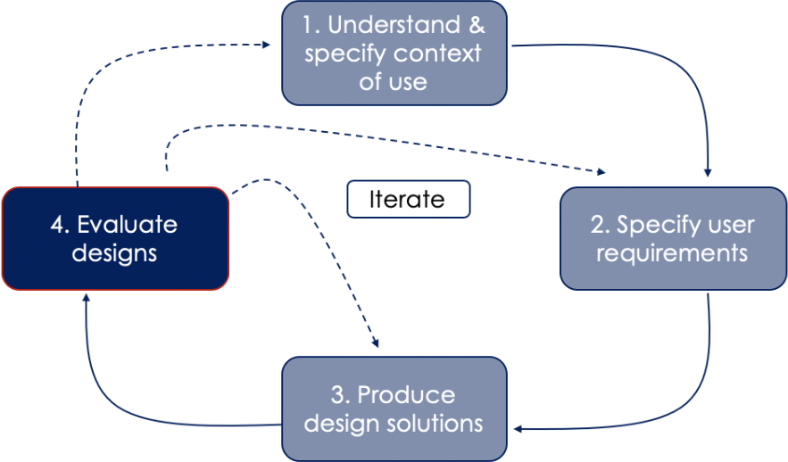
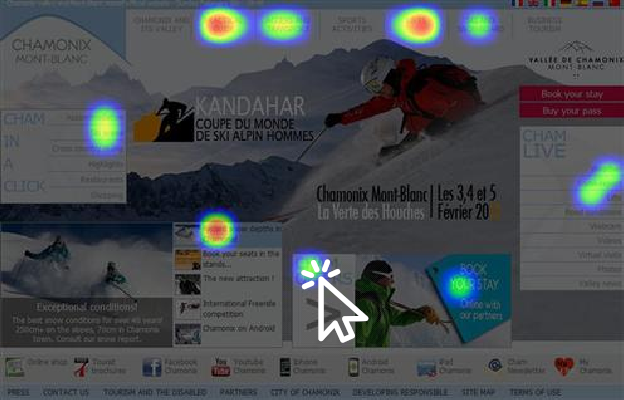

Prototyping
Presentation:
User Experience (UX) Design and Management

- Used extensively
- Part of most previously discussed design paradigms
 UCD (User-Centered Design)
UCD (User-Centered Design)
 Phase 3/4 in the UCD process
Phase 3/4 in the UCD process

Phase 4/4 in the UCD process
 Design Thinking
Design Thinking

functional prototype:
Shows function, appearance / not final scale, manufacturability, ...
paper prototype:
Early UI testing on paper.
Confirm and communicate design ideas
visual prototype:
Shows size, appearance
special case:
form study prototype:
Emphasizes geometry & less color/material

— Tullis und Albert - Seite 128
(Über die Verzerrung von Ergebnissen durch Artefakte)
Formative And Summative Effects Of Prototyping

To find out improvement areas prior to release—
03_UXDM.pdf
To determine the quality of UX against a set of criteria—
03_UXDM.pdf
Applications
- comparing designs

- online surveys

Possibility to combine with click analysis, A/B testing, ...
- performance metrics
- like user efficiency
- or loading speeds
- ...

measure users speed in one prototype

measure efficiency between multiple prototypes
-
testing
- user success in A/B testing
- ...

Setup a test with different prototypes for each hypothesis

Perform measurements and analysis using these different prototypes
Personal anecdote
by Thomas Tullis,author of "Interactive technologies"
- Phase 2/3 in UCD
- Thomas built a High-Voltage-detection device
- He argues with enginees about their choice of LEDs
- Engineers do not wish to change design
 Mistaking the LEDs for each other is a deadly mistake!
Mistaking the LEDs for each other is a deadly mistake!
- Phase 3/4 in UCD
- modified prototype has been build
- simulates a deadly voltage with a 20% probability
- Phase 4/4 in UCD
- Perform test:
- 100 participants test the prototype
- One participant interprets the LEDs wrong
- Draw conclusion:
- Design will be changed
- Perform test: